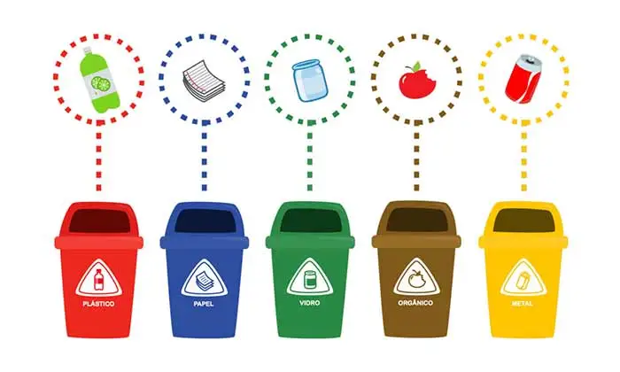
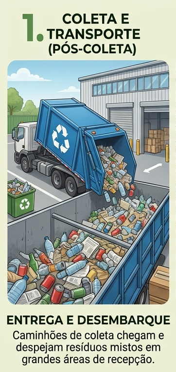
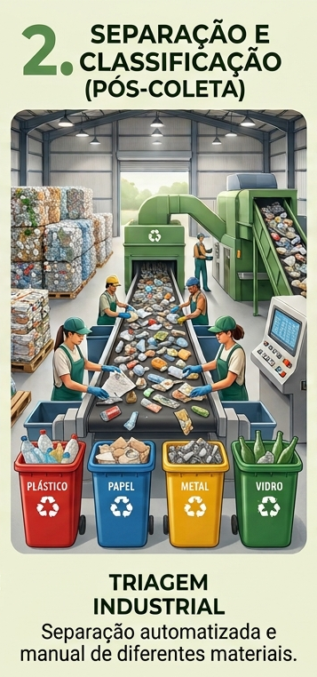
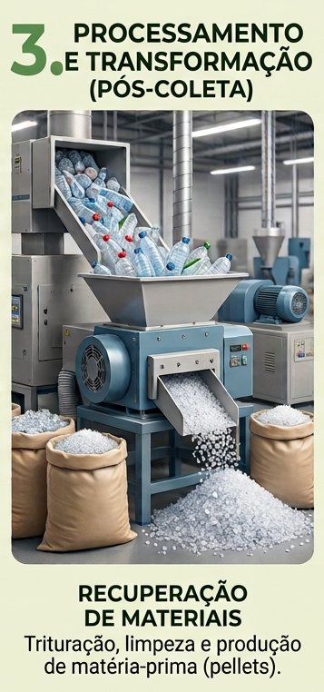
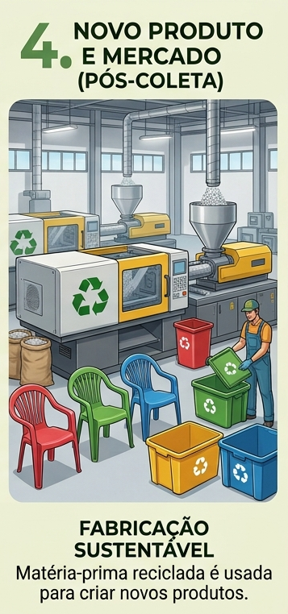

Porque Separar o Lixo?
A separação de resíduos é o passo mais fundamental para a preservação ambiental e a economia circular. Quando misturamos tudo no mesmo cesto, transformamos materiais reutilizáveis em lixo comum, sobrecarregando aterros e desperdiçando recursos valiosos.
Reciclar papel evita o abate de árvores, reciclar plástico reduz a extração de petróleo e o reaproveitamento de metais diminui a necessidade de mineração intensiva.
Materiais orgânicos descartados incorretamente em aterros geram gás metano, um dos principais responsáveis pelo efeito estufa. Materiais recicláveis expostos ao meio ambiente levam centenas de anos para se decompor e poluem rios e oceanos.
A triagem correta garante renda digna para milhares de catadores e cooperativas de reciclagem, além de alimentar indústrias que utilizam matéria-prima reciclada.
Pequenas atitudes garantem que o material reciclável chegue limpo as cooperativas.
Vermelho (Plástico):
Garrafas PET, embalagens de detergente, sacolas, tampinhas e potes de alimento. Dica: Passe uma água rápida para retirar o excesso de sujeira.
Azul (Papel):
Caixas de papelão, jornais, revistas, folhas e embalagens cartonadas (Tetra Pak). Dica: Mantenha o papel seco e dobre as caixas para economizar espaço.
Verde (Vidro):
Garrafas, potes de conserva, frascos de remédio e cacos. Dica: Embale cacos de vidro em papel jornal ou caixa de papelão para proteger os coletores.
Amarelo (Metal):
Latas de alumínio, tampas de garrafa, enlatados e folha de alumínio limpa. Dica: Amasse as latas para otimizar o volume.
Marrom (Orgânico):
Restos de comida, cascas de frutas, pó de café e folhas secas.

Pós Separação



